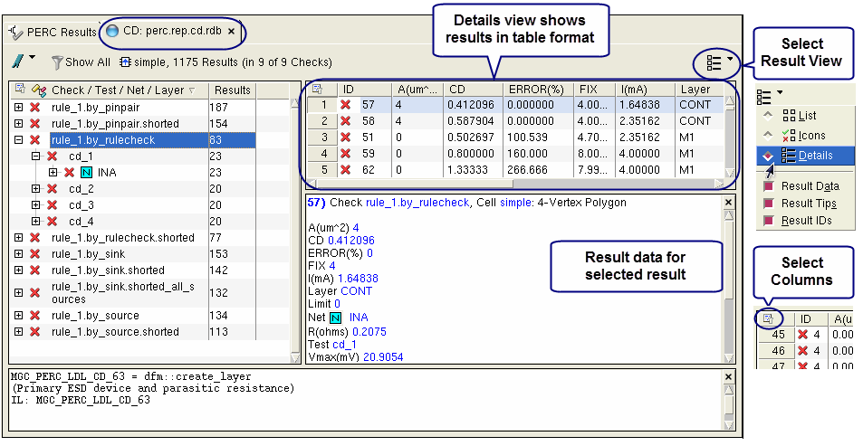

Figure 1. CD Tab in Calibre
RVE for PERC LDL
The Details view shows statistics
about each parasitic resistor result polygon. You can right-click
any column header for a context-sensitive menu. Following is the complete
list of column descriptions.
The value “NaN” is given for
some measurements when a polygon is missing in disjoint path results
or when certain nets are not netlisted by the parasitic extractor. Other
values show “N/A” when they are not available.
ID — Internally generated result number.
A(um^2) — Area of a contact
or via layer polygon from the CD result. If the Layer is not contact
or via layer, then the area is 0. The W(um) column shows the width
of the polygon in this case.
CD — Current density for the
result polygon. For interconnect, this is in mA/um. For via and
contact, it is in mA/square um.
EM_Length(um) — Length of the longest
path of contiguous parasitic resistors on a net. The result polygon
associated with the EM length is a member of the path. EM data is
only present when the perc_ldl::execute_cd_checks -em option is used.
EM_Width(um) — Widest width
of a parasitic resistor in the path from which EM_Length is taken.
ERROR(%) — Ratio of CD/Limit
as a percent from the CD result. If Limit is 0, then the error percentage
does not apply.
FIX — Value in um that the
width of an interconnect polygon from the CD result must be increased
by in order for the error percentage to be <=100%. If the polygon
is on a contact or via layer, then the units are area in square
um.
I(mA) — Current through the
polygon from the CD result in milliamperes.
Layer — Layer of the polygon
from the CD result.
Limit — CD limit as specified
in a PERC LDL CD Constraint specification statement. If no limit has been
specified, then the value is 0.
Net — Net name. You can click
the net icon () for a highlight
menu.
R(ohms) — Resistance of the
polygon from the CD result. Layers having associated resistance
extraction statements in the rule file have their resistances calculated.
Subgraph_ID — A numeric identifier used
for grouping EM results. A subgraph consists of connected polygons
from the same layer on the same net. These identifiers are not unique
per layer.
Test — Internally-generated
identifier that corresponds to a set of sources and sinks. The perc_report.cd report
file shows the setup for each test.
Via_I_Direction —
The direction of current flow through a via versus the layer stack.
UP means toward higher-level metal. DOWN means toward lower-level
metal. Unknown means the direction is indeterminate. N/A is returned
for conductive layers. This information is only present when the
perc_ldl::execute_cd_checks -em option is used.
Vmax(mV) — Maximum voltage
for the polygon in millivolts.
Vmin(mV) — Minimum voltage
for the polygon in millivolts.
W(um) — Width of an interconnect
layer polygon from the CD result. If the Layer is not an interconnect
layer, then the width is 0. The A(um^2) column shows the area of
the polygon in this case.
Vertices — Vertex count.
Coordinates — The x and y coordinates of
the polygon from the CD result.
 ) to
select the grouping in the tree view.
) to
select the grouping in the tree view.